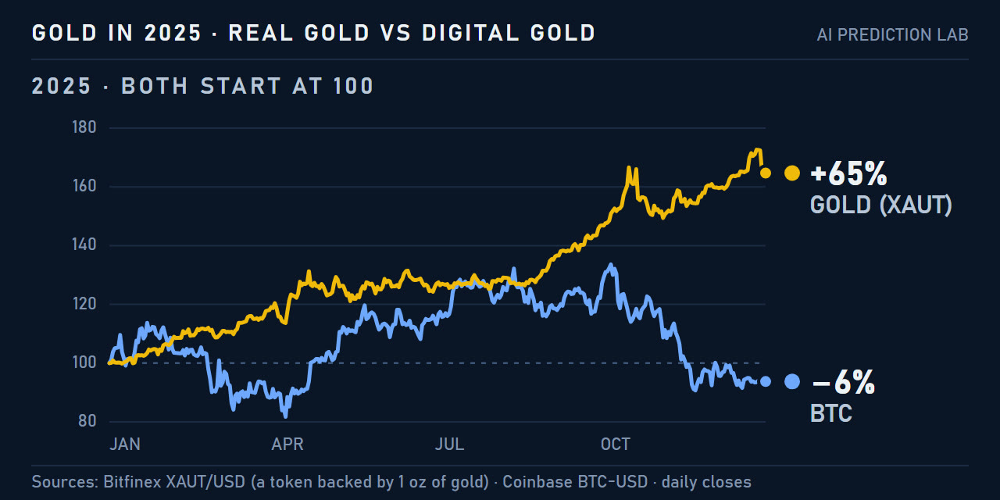
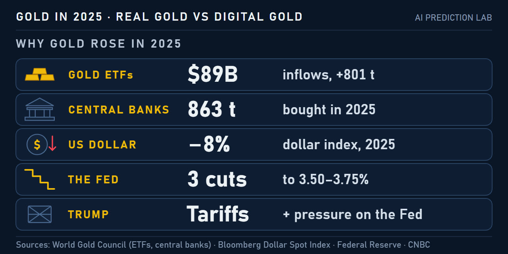
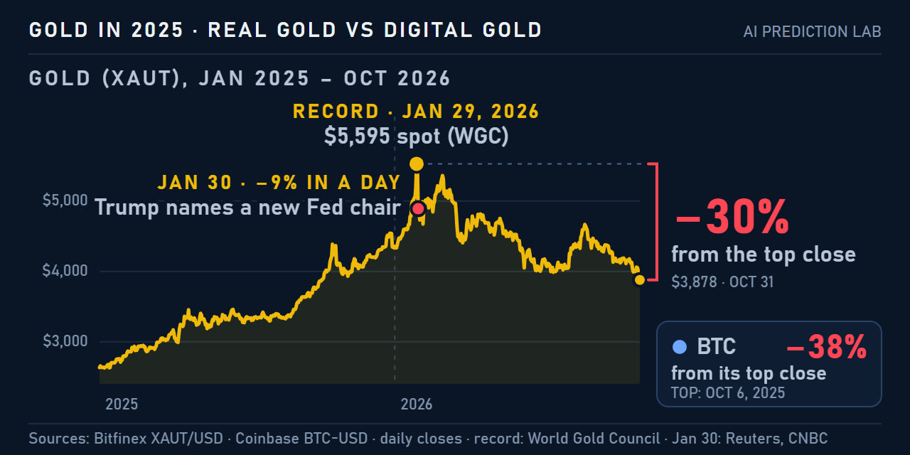

Why gold had its best year since 1979, and digital gold didn't
In 2025 the price of gold rose about 65%, its best year since 1979, according to Reuters. The World Gold Council (WGC), the gold industry's research body, measures it on the LBMA benchmark price and gets 67%. Bitcoin, often called digital gold, fell about 6% over the same year. This page sets out what drove gold, including President Trump's tariffs and his pressure on the Federal Reserve, according to the WGC and the news reports of the time, how bitcoin compared, and what happened in 2026: a record in January, then a fall of about 30%.
- +65%gold in 2025, on XAUT daily closes from Bitfinex; the WGC's LBMA benchmark gives +67%
- −6%bitcoin in 2025, on Coinbase daily closes
- 53record highs for the LBMA gold price in 2025, according to the WGC
- $89Btaken in by gold funds (ETFs), a record, according to the WGC
Real gold and digital gold
On the chart below both start 2025 at 100, and they end it far apart. On XAUT closes, gold rose in 11 of the 12 months, most in September, up 11.6%. Bitcoin set a record of $126,296 on October 6, by Coinbase's prices, then fell 36% to $80,525 by November 21.

The size of gold's rise depends on which price is measured and when the day's price is taken. The figures below all describe the same year.
The line runs from the lowest to the highest, not from zero: +64.4% to +67%
- LBMA benchmark+67%the WGC, from US$2,609 to US$4,368
- Spot, CNBC+66%CNBC on December 30
- XAUT+65%Bitfinex daily closes, the lab's own calculation
- Spot, Reuters+64.4%Reuters, the best year since 1979
Spot gold is the price for delivery now; the LBMA benchmark is set once each afternoon in London.
Why gold rose
Demand for gold reached a record 5,002 tonnes in 2025, and demand from investors rose 84%, to 2,175 tonnes, according to the WGC. Its reports and the news of the time point to several reasons.
- Gold funds. Exchange-traded funds that hold gold (ETFs) took in a record US$89 billion, according to the WGC. Their holdings grew by 801 tonnes, to 4,025 tonnes, and the value they hold doubled, to US$559 billion. North American funds took in $51 billion of it.
- Central banks. They bought 863 tonnes, according to the WGC. That is less than the 1,092 tonnes of 2024, and the first year in four under 1,000 tonnes. Poland bought the most, 102 tonnes, ahead of Kazakhstan with 57 and Brazil with 43.
- A weaker dollar. The Bloomberg Dollar Spot Index fell about 8% in 2025, its worst year since 2017, Bloomberg reported. The WGC lists a weaker dollar among gold's drivers.
- Lower interest rates. The Federal Reserve cut its rate three times, by a quarter point each: on September 17, October 29 and December 10, to 3.50–3.75%. Gold pays no interest, so lower rates make it cheaper to hold; the WGC calls this the opportunity cost.
- Trump's tariffs and the Fed. In April, gold passed $3,400 for the first time, up about 30% for the year. CNBC tied the rise to US tariffs, to President Trump's threats against the Fed's independence and to a dollar at a three-year low. The dates are set out further down, under Trump and gold.
- The debasement trade. By October, Wall Street was talking about the debasement trade: a bet that heavy government borrowing and money printing wear down the dollar's value, CNBC reported. Jeff Currie of Carlyle told CNBC it gained steam with the US government shutdown. The WGC's year-end reviews do not use the term.

The WGC also splits the rise between causes with its own model. That model explains about two thirds of it and leaves central-bank buying out.
- Risk12geopolitical and other risks
- Economy10economic growth
- Momentum9buying that follows a rising price
- Dollar8a weaker US dollar
- Interest rates2lower rates, which make gold cheaper to hold
- Not explained20about 20 points the model does not explain
Data to November 28, 2025, when gold was up 60.6% for the year. The WGC says the part not explained likely includes central banks, tariffs and buying by trend-following funds and individuals.
Gold did not rise in a straight line. On October 21, spot gold fell 5.5% in a day, to $4,115, the day after a record of $4,381, as traders took profits, CNBC reported. It then climbed again, to a record spot price of $4,549.71 in late December.
Trump and gold
Reuters reports of the time tied several of gold's sharpest moves in 2025 to decisions and words of President Trump: on tariffs, on the Fed and its chair, Jerome Powell, and on the government shutdown. Not every move was up. Twice, when the pressure eased, gold fell.
- Apr 3
Record after the tariffs Spot gold at a record $3,167.57 the day after new US tariffs were announced; gold itself was exempt, Reuters reported.
- Apr 7
Tariff shock Spot fell about 2%, to about $3,020, as an analyst quoted by Reuters described liquidation to cover losses in other assets.
- Apr 21
Above $3,400 A record $3,430.18 as Trump attacked Powell and the dollar hit a three-year low, Reuters reported.
- Apr 22
Above $3,500 A record $3,500.05 after further attacks by Trump on Powell, Reuters reported.
- Apr 23
Threats withdrawn Spot fell 2.2%, to $3,308.81, after Trump backed away from threats to fire Powell, according to Reuters.
- May 12
Tariff pause Spot fell 3.1%, to $3,223.57, after the US and China agreed a 90-day pause in their tariffs, according to Reuters.
- Aug 26
A Fed governor A two-week high of $3,382.19, the day after Trump said he was firing Fed Governor Lisa Cook, Reuters reported.
- Sep 4
Record Spot at $3,549.53; Reuters cited an appeals court ruling that the tariffs were illegal, and Trump's pressure on the Fed.
- Oct 8
Above $4,000 Spot at $4,034.73 for the first time, on the eighth day of the US government shutdown, Reuters reported.
- Nov 12
Shutdown ends Trump signed the bill ending the shutdown after 43 days, the longest on record, Reuters reported.
Spot prices from Reuters reports of each day, as carried by Kitco, Business Recorder, GV Wire, The Star, RTÉ and KSL. They show what Reuters tied each move to; other things moved gold on the same days.
Then 2026
Gold kept rising into the new year. In January, Reuters tied two new records to Trump: one amid a criminal investigation into Powell, the other after Trump threatened tariffs on eight European countries over Greenland. On January 29 gold set its record: US$5,405 on the LBMA benchmark and US$5,595 at its highest point during the day, according to the WGC. The next day Trump named Kevin Warsh to lead the Fed, and spot gold fell about 9%, on course for its steepest daily drop since 1983, Reuters reported. CNBC said the choice eased fears for the Fed's independence. Gold has fallen since. For the first half, the WGC lists profit-taking, a stronger dollar, higher bond yields and sales by some central banks among the reasons.
- Jan 12
Above $4,600 Spot at a record $4,600.33, amid a criminal investigation into Fed chair Powell and his dispute with Trump, Reuters reported.
- Jan 20
Greenland tariffs Spot at a record $4,765.93 after Trump threatened tariffs on eight European countries over Greenland, Reuters reported.
- Jan 29
Record US$5,405 on the LBMA benchmark; US$5,595.47 at the day's high, according to the WGC.
- Jan 30
A new Fed chair Trump named Kevin Warsh. Spot fell about 9%, on course for its steepest daily drop since 1983, Reuters reported; CNBC said the choice eased fears for the Fed's independence.
- Jun 24
Low of the first half Spot gold at US$3,959.33, according to the WGC.
- Sep 30
End of September US$4,176, down 8.5% in September and 4.4% for the year, according to the WGC.
- Oct 30
Lowest in a year Spot gold near $3,880, its lowest since October 6, 2025, according to Kitco.
- Oct 31
Latest close XAUT at $3,877.90 on Bitfinex, 29.9% below its highest close, $5,528.50 on January 28.
The WGC gives LBMA benchmark and spot prices; XAUT is a token whose price follows gold, so its closes differ from both by a little.
On October 30, higher oil prices and bets on a Fed rate rise weighed on gold, Kitco reported. CME's FedWatch tool put the chance of a December rate rise at about 75%, according to CNBC.
Digital gold has fallen further. On Coinbase's daily closes, bitcoin ended October 31 at $77,423.98, 37.9% below its highest close, $124,720.09 on October 6, 2025.

Each week the lab asks four AIs whether bitcoin will end the week higher or lower. Their calls and how they went are on the forecasts page.
Updates
Newest first. Each entry is dated, and the numbers above change only with a new entry here.
- November 2. First version of this page.
How this page was made
- Gold in the charts is XAUT, a token backed by one ounce of gold, in daily closes from Bitfinex. Its yearly change is the lab's own calculation: from $2,631.00 at the open on January 1 to $4,333.80 at the close on December 31, up 64.7%.
- Benchmark figures, tonnes and fund flows come from the WGC's reports, which use the LBMA price set each afternoon in London.
- Spot prices come from news reports of the day. Reports take the price at different times, so their figures differ a little.
- Bitcoin is Coinbase BTC-USD in daily UTC closes, from Coinbase's public candles. Its yearly change is the lab's own calculation: from $93,354.22 to $87,497.94, down 6.3%. Its fall from its highest close to October 31 is the lab's own calculation on the same closes.
- The video and stills are from Repka's episode. Repka is an animated AI character, not a person.
Sources
- World Gold Council: Gold Market Commentary, December 2024, Gold Market Commentary, December 2025, Gold Demand Trends, full year 2025, central banks in 2025, gold ETF flows, January 2026, press release on 2025 demand, Gold Outlook 2026, Gold Mid-Year Outlook 2026, Gold Market Commentary, September 2026
- Federal Reserve: statement of September 17, 2025, October 29, 2025, December 10, 2025
- Reuters, via Investing.com: gold's best year since 1979
- Reuters, via Kitco: a record after the tariffs, April 3, 2025, the US–China tariff pause, May 12, 2025, Fed Governor Lisa Cook, August 26, 2025
- Reuters, via The Star: the tariff shock, April 7, 2025, threats to fire Powell withdrawn, April 23, 2025, above $4,600, January 12, 2026
- Reuters, via Business Recorder: above $3,400, April 21, 2025, a record on September 4, 2025
- Reuters, via GV Wire: above $3,500, April 22, 2025, the fall of January 30, 2026
- Reuters, via RTÉ: above $4,000, October 8, 2025
- Reuters, via KSL: the end of the shutdown, November 12, 2025
- Reuters, via CNBC: Greenland tariffs and a record, January 20, 2026
- Bloomberg, via The Star: the dollar's worst year since 2017
- CNBC: gold above $3,400 in April 2025, the debasement trade, gold's fall on October 21, gold at the end of 2025, bitcoin in 2025, Kevin Warsh and gold's fall, January 30, 2026, gold and bets on a Fed rate rise, October 30, 2026
- Kitco: gold below $3,900, October 30, 2026
- Bitfinex: XAUT/USD daily candles
- Coinbase: BTC-USD daily candles
This is an experiment and documentation, not financial advice. I do not recommend buying or selling anything.